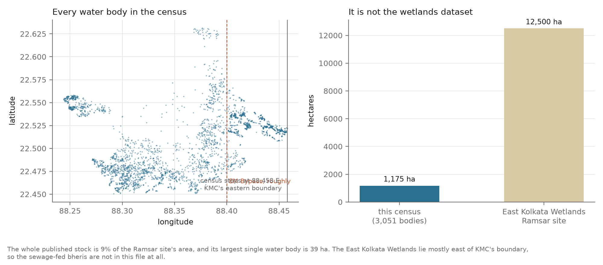
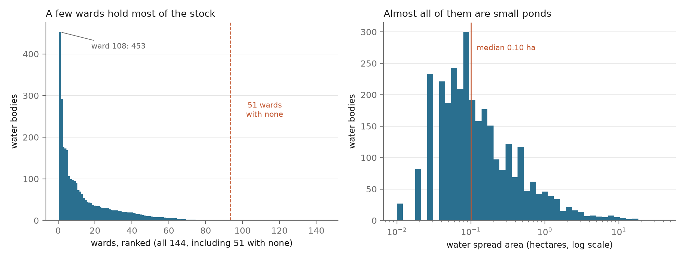
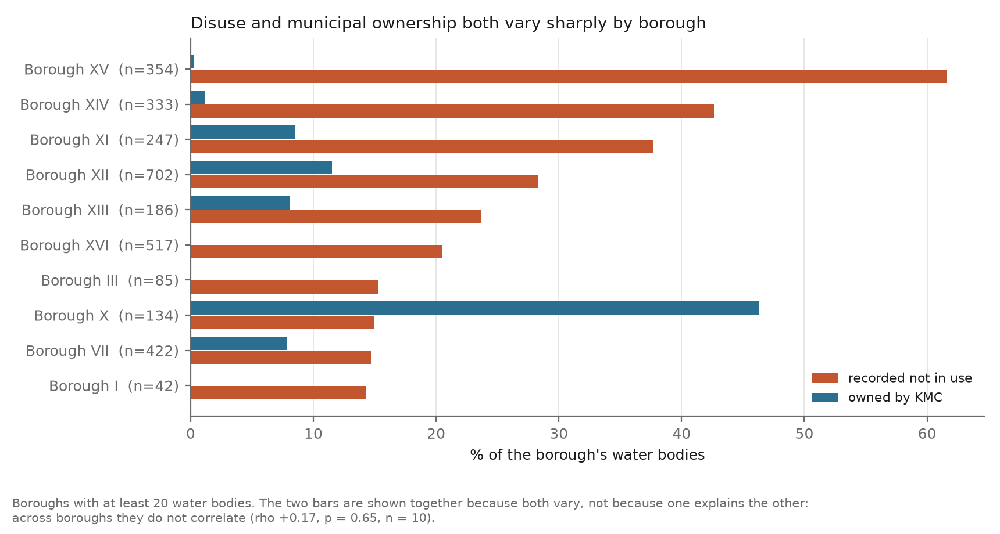
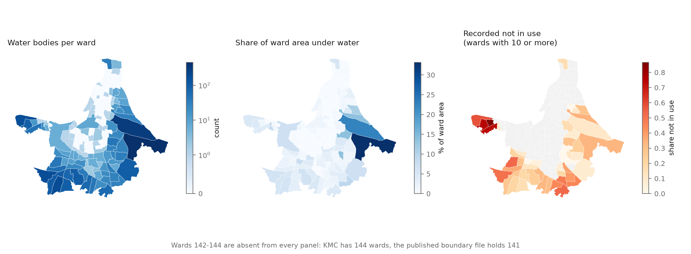
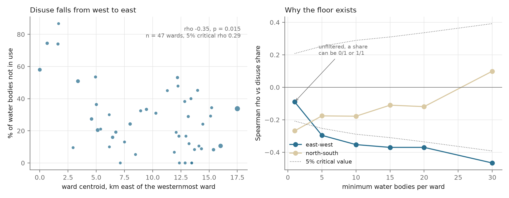

The obvious frame for a Kolkata water dataset is the East Kolkata Wetlands, the Ramsar-listed sewage fishery on the city's eastern edge. That frame does not fit this file, and it is worth settling before anything else.
The whole published stock covers hectares. The Ramsar site alone is roughly 12,500. The largest single water body in the census is hectares, where the wetlands' sewage-fed bheris run to hundreds. And the easternmost record sits at E, which is where KMC's jurisdiction stops.
The wetlands lie mostly beyond that line, in North and South 24 Parganas. They are not in this file. What is in it is the city's pond and tank stock: small, numerous, mostly private, and until now not read ward by ward.

Kolkata's ponds are not spread thinly across the city. Of 144 wards, hold at least one and hold none. The twenty richest wards hold of every water body in the city. Wards 108 and 58 alone account for of the total water surface.
The Gini coefficient across all 144 wards is on counts and on area. Restricting to the 93 wards that hold anything still leaves and : the empty wards raise the concentration, they do not create it.
Almost every one of these is a small pond. The median is hectares, the 95th percentile , and the smallest recorded is .

The Bengaluru chapter of this project found that raw counts, counts per square kilometre and counts per resident gave three opposite geographic answers from the same two columns. That trap does not bite here, and it is worth saying so plainly rather than repeating the warning by reflex.
Only one measure genuinely reorders the city: the share of a ward's area under water. That picks out wards holding one or two large ponds rather than wards holding many, which is a different question and a legitimate one. Switch between them below.
Hover or tap a ward.
KMC has had 144 wards since the 2015 election, when the Joka area was annexed into Borough XVI. The boundary file OpenCity publishes, named "Kolkata Wards Map 2022", holds 141: it is the pre-2015 set. Wards 142, 143 and 144 have no polygon to draw, and between them they hold water bodies that a naive spatial join would have dropped without saying so.
The tables and statistics on this page use all 144 wards. Only the maps are limited to 141, because that is all the published geometry can draw.
Of water bodies, KMC owns outright, or . The rest are held by individuals, groups of individuals and other private bodies. That shapes what the corporation can act on directly: whatever KMC does about a shrinking or disused pond, it does overwhelmingly on land it does not hold.
The ownership pattern is not uniform. In Boroughs XIII to XVI, the southern and western fringe that holds of the city's water bodies, KMC owns . Across the rest of the city it owns .
| Owner | Water bodies | Share |
|---|
The census asks whether a water body is in use, and for of the 3,051 the answer recorded is no. Of those in use, the largest group is pisciculture, then domestic and drinking use, then industrial.
Disuse is very unevenly spread. Boroughs XIV and XV together hold of the city's water bodies but account for of every disused one. Borough XV, which covers Garden Reach and Metiabruz, records of its water bodies as out of use. Borough VII records .


| Borough | Wards | Water bodies | Area (ha) | Not in use | KMC-owned |
|---|
Disuse falls from west to east across the city. At ward level, restricted to the wards holding at least ten water bodies, the rank correlation between a ward's easting and its disuse share is (p = ). At that sample size the two-sided five per cent critical value is , so the coefficient clears it.
The north-south axis shows nothing: . The gradient is east-west, and reporting it as anything else would be reading the map rather than the data.

| Minimum per ward | Wards | 5% critical rho | East-west rho | p | North-south rho |
|---|
Three results looked promising and are reported here as nulls, because a negative that was actually tested is worth more than a caveat that was not.
Across wards holding at least ten water bodies, the rank correlation between a ward's municipal ownership share and its disuse share is . Borough X owns 46 per cent of its water bodies and records 15 per cent disused; Borough XVI owns none and records 21 per cent. There is no relationship at this resolution to report.
Comparing water bodies one by one, of municipally owned water bodies are in use against of privately owned ones, and a chi-square test on the 3,051 records returns p = . That number is not reported as a finding.
3,051 points clustered in 93 wards, 453 of them inside ward 108, are not 3,051 independent observations. The same question asked at ward level, where the units are closer to independent, returns nothing. The significant version is an artifact of the unit, not evidence about ownership.
Ward disuse share correlates strongly with ward water-body count when every ward is included, and the relationship dissolves as the floor rises. It was measuring the coarseness of a share computed on one or two water bodies.
| Minimum per ward | Wards | rho | p |
|---|
This census counted inside KMC. That sits oddly against the other counts on record, collected in Mohit Ray's work for the Centre for Science and Environment.
| Source | Ponds counted |
|---|
Ray's argument, made from these figures, is that roughly 44 per cent of Kolkata's water bodies were filled in over two decades. That case is already published and this page does not restate it as a new finding.
These are four different instruments across three decades: a municipal register, a national topographic map series, a manual count from satellite imagery, and a national field census. They disagree about what counts as a water body and about where KMC's boundary ran at the time. The gap between 3,051 and 8,731 frames a question about what each exercise was measuring. It is not a loss estimate, and treating it as one would be comparing across instruments that were never comparable.
The census records whether a water body has been encroached upon. For all Kolkata records the answer is No, without a single exception. The field has no variance at all.
In a city with a long and litigated history of pond filling, a uniformly negative column is evidence that the field was never populated, not evidence that nothing has been encroached. No encroachment figure is reported on this page, and a hedged "0 per cent encroached" would be worse than silence, because it would be quoted without the hedge.
The same applies to water_body_nature, which reads Man-made for every record.
This project began as a broader question about ward-level access to civic amenities in Kolkata, in the shape of the Mumbai chapter before it. Most of that question turned out to be unanswerable from what KMC publishes. That is a finding about municipal transparency, so it is reported rather than quietly dropped.
KMC's budget statements are consolidated across all sixteen boroughs. The account code carries borough and ward columns, but they hold aggregate placeholders on essentially every line. Exactly one line item is attributed to wards: the Councillors' Elaka Unnayan Prakalpa, which allocates an identical ₹15.00 lakh to each of the 144 wards, with zero variance. It was ₹12.50 lakh in both 2019-20 and 2021-22, equally flat.
That is ₹21.6 crore against a 2025-26 budgeted expenditure of ₹5,639.56 crore: 0.38 per cent of the budget, distributed equally by design. The scheme appears under two object codes; whether those sum or restate the same money is not resolvable from the published PDF, so no combined total is quoted here.
For comparison, the Bengaluru chapter of this project could attribute 82.7 per cent of ₹46,481 crore of BBMP work orders to named wards, and found a 35-fold spread between the top and bottom ward. There is nothing equivalent to analyse in Kolkata, because there is nothing equivalent published.
OpenCity's largest Kolkata dataset is 80 ward drainage maps. All 80 are scanned PDFs, and they cover 80 of 144 wards, with Boroughs XI to XVI almost entirely absent. Reading them as data means georeferencing and digitising 80 scanned plans for just over half the city.
Five of the fourteen KMC amenity tables carry a ward column, and they cover 127, 106, 55, 53 and 21 of the 144 wards respectively. With 91 wards absent from the parks table, there is no way to distinguish a ward with no park from a ward that is not in the registry, and that ambiguity would not be randomly distributed. The markets table is 47 names with no address and no ward at all.
OpenCity's KMC Pay-and-use Toilets (2018) resource is a byte-identical copy of KMC Schools. Same MD5 (1c0ce93ca1f54407777bcec4ea582c8e), same 258 rows, same columns: school code, school address, school type, classes, number of students.
Kolkata therefore publishes no public toilet data at all, and the central question of this project's Mumbai chapter cannot be asked here. The check runs on every fetch, so if the upload is corrected the repository will say so.
Which is why this chapter is about ponds.
Every layer used here is from a different year, and the portal's own dates are upload dates carrying no vintage information. The real ages had to be recovered from the files.
| Source | Actual vintage | What the portal says |
|---|---|---|
| Ward boundary KML | pre-2015 (141 wards) | resource named "Kolkata Wards Map 2022" |
| Water bodies census | described "2018-19", resource named "2023" | |
| Elector counts | 2015 KMC election | correct |
| Borough to ward lookup | undated | undated |
| KMC budget | 2017-18 to 2026-27 | correct |
The water bodies file carries an enumeration timestamp on every record, which is the only hard vintage evidence available. It puts fieldwork in , so the portal's description is wrong in one direction and the resource name is wrong in the other.
Each water body carries its ward inside a village label and, separately, its own coordinates. Assigning wards spatially and keeping the label allows the two to be compared instead of silently reconciled.
| Outcome | Records |
|---|
The panel is built on the label rather than the geometry, for one reason: the geometry cannot represent wards 142 to 144 at all, and dropping three wards from a 144-ward panel is exactly the failure this page is about. The two orderings agree closely enough for that to be safe: rank correlation across wards.
This decides whether the analysis has 144 units or 93, so it was tested rather than assumed. If small ponds were being missed in the dense old-city core, the left tail of the size distribution would thin out there. It does not.
| Band | Records | Smallest | 10th pct | Median | Share ≤ 0.03 ha |
|---|
Enumerators recorded ponds down to 0.02 hectares inside the core, at a higher small-pond share than the middle band. Nothing was suppressing small water bodies there, so a ward with none plausibly has none. The 51 empty wards are carried as real zeros, and the 93-ward restriction is reported alongside every concentration figure.
One caveat stays open. The NATMO count of 8,731 has to live somewhere, and small ponds in the dense core are the obvious candidate. This test shows the census was not applying a size threshold; it cannot show the census found everything.
robustness.py, and the ranges rather than the caveats are quoted
above. Removing wards 108 and 58, which hold over half the water surface,
moves the citywide disuse share from and the
municipal share from .